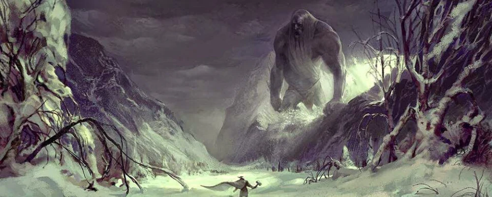
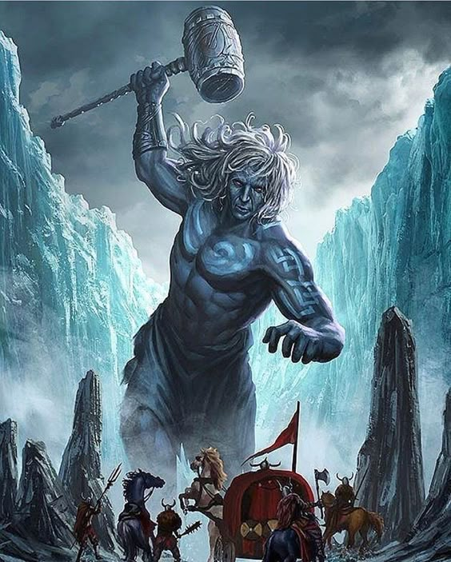
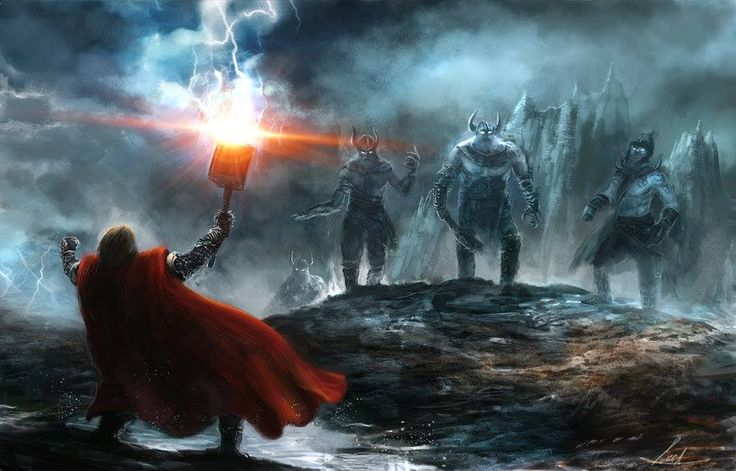

Het thuisland van de reuzenHet is een ruig en gevaarlijk gebied, vol bergen, wouden en woeste natuurkrachten. De reuzen die er wonen zijn vaak in conflict met de goden, maar ze zijn ook een belangrijk onderdeel van de balans in het universum. |
 |
|  |
Niet alle reuzen zijn kwaadaardigHoewel ze vaak als vijanden van de goden worden gezien, zijn sommige reuzen wijs, krachtig of zelfs romantisch verbonden met goden. Bijvoorbeeld, de reus Skadi trouwde met Njord, een van de Vanir-goden. |
WeetjeHet ligt aan de rand van de wereld, gescheiden van Asgard door rivieren en bergen. Deze afstand symboliseert het contrast tussen orde (Asgard) en chaos (Jotunheim), wat een terugkerend thema is in de Noorse mythologie. |
 |